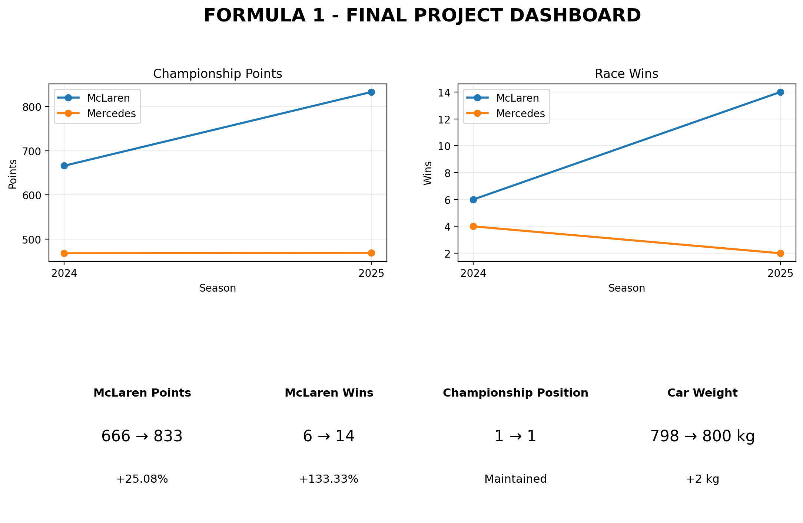

Final findings and results of the Web Scraping & Product Analysis System
The project developed a Web Scraping and Product Analysis System using Formula 1 cars and teams as the product domain. Technical specifications and performance information were collected from web sources, cleaned, structured and analyzed.
| Team | 2024 Points | 2025 Points | 2024 Wins | 2025 Wins |
|---|---|---|---|---|
| McLaren | 666 | 833 | 6 | 14 |
| Mercedes | 468 | 469 | 4 | 2 |
McLaren's recorded car weight changed from 798 kg in 2024 to 800 kg in 2025.
The recorded weight distribution remained 44.6% – 46.1%.
Other common numerical specifications available for both seasons did not show measurable changes in the extracted data.
MGU-K and MGU-H numerical specifications were available in the 2025 extracted data but were not available in the 2024 extracted dataset.
McLaren remained first in the constructor standings in both analyzed seasons.
Championship points increased from 666 in 2024 to 833 in 2025, an increase of 25.08%.
Race wins increased from 6 in 2024 to 14 in 2025, an increase of 133.33%.
Mercedes points changed only slightly from 468 to 469.
The analysis observed technical and performance changes between the two McLaren seasons.
However, the results do not prove that the observed technical changes directly caused the improvement in performance.
Only two McLaren seasons were available for the comparison. Other factors such as drivers, reliability, race strategy, regulations and other technical developments may also affect performance.
Therefore, the project identifies an observed association, rather than establishing causation.
The dashboard below combines the major findings from the technical analysis, performance analysis and technical-vs- performance comparison.

Finding 1: McLaren remained first in the constructor standings in both analyzed seasons.
Finding 2: McLaren championship points increased by 25.08% from 2024 to 2025.
Finding 3: McLaren race wins increased by 133.33% between the two seasons.
Finding 4: The recorded car weight increased by only 2 kg.
Finding 5: The available data did not show measurable changes in the other common numerical technical specifications.
Finding 6: The technical and performance changes show an observed association, but the available data is insufficient to establish causation.
The Web Scraping and Product Analysis System successfully collected, processed and analyzed Formula 1 technical and performance information.
The analysis showed a substantial improvement in McLaren's measured performance from 2024 to 2025, particularly in championship points and race wins.
The technical analysis identified only limited measurable changes in the available specifications.
The project demonstrates how web scraping, data cleaning, data structuring, quantitative analysis and visualization can be combined to perform product-oriented analysis using Formula 1 cars and teams.